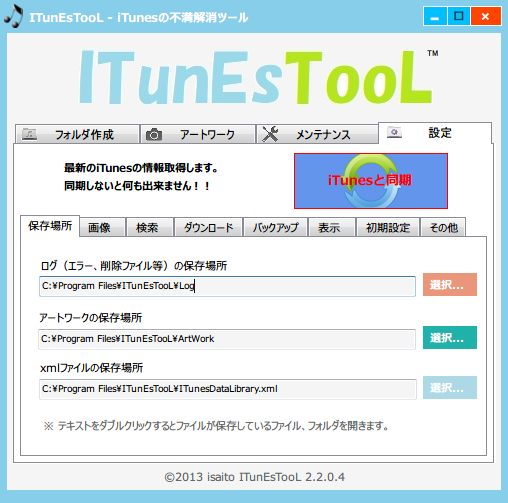

設定

１．保存場所タブ
１−１．ログ（エラー、削除ファイル等）の保存場所
ログファイルの保存場所を指定することが出来ます。
１−２．アートワークの保存場所
アートワークの保存場所を指定することが出来ます。
１−３．xmlファイルの保存先
xmlファイルの保存場所を指定することが出来ます。
２．画像タブ
２−１．ダウンロードした画像のみ設定する
チェックした場合は、既に設定されているファイルが削除されダウンロードした画像が設定されます。
未チェックの場合は、画像が追加で登録されます。
２−２．保存する画像の名前
保存する画像の名前を設定することが出来ます。
２−３．保存する画像の拡張子
保存する画像の拡張子を設定することが出来ます。
３．検索タブ
３−１．コンピレーションアルバム検索時にアーティスト名を含める
コンピレーションアルバム（さまざまなアーティスト）のアルバムアートワークを検索する際に
アーティスト名を含むことが出来ます。アーティストを含めるとアーティストよりの
画像が設定される可能性があります。
４．ダウンロードタブ
４−１．ダウンロードする画像のサイズを指定
300×300 〜 500×500の範囲の画像をダウンロードすることが出来ます。【単位はpx】
サイズが大きければ大きいほど検索する画像数が少なくなります。
５．バックアップタブ
５−１．上書きバックアップ方式
バックアップするファイル名と同じファイル名がある場合、上書きを行います（速度遅め）。
５−２．差分バックアップ方式
バックアップするファイル名と同じファイル名がある場合、上書きを行いません（速度早め）。
６．表示タブ
６−１．ITunEsTooLを最前面に表示する。
ITunEsTooLを常に画面の最前面に表示することが出来ます。 最前面に設定するとドラッグ操作など行い易くなります。
７．初期設定タブ
７−１．ITunEsTooLの起動時にiTunesと自動で同期する
ITunEsTooLを起動した際に、自動で同期を行うことが出来ます。
８．その他タブ
８−１．バージョン情報
ITunEsTooLのバージョン情報、著作権など確認することが出来ます。
最新バージョンでない場合は、http://itunestool.jp/に飛ぶことが出来ます。
８−２．メール
ITunEsTooLに対する意見や不具合をexkurumizawa@gmail.comで受け付けています。